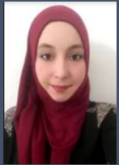

RAHMA BELKHOUJA
+21658073619
belkhoujar@gmail,com
Mohamed abd salam street,Mahdia, Tunisia (postal code: Mahdia 5100)

EXPERIENCE
- ADP ES TUNIS| Oct 2019 Payroll accountant, Tunisia
- Internship at Italian Ministry of Agriculture| Mar 2018 To May 2018
Project mananger, Palermo, Italy
- Internship at National agriculture Bank| May 2016 To Jul 2016 Financial tasks, Mahdia, Tunisia
- Internship at Ministry of Commerce| Jun 2014 To Jul 2014 Financial and commercial tasks, Mahdia, Tunisia
- Summer job at Tunisian post| Jul 2013 To Aug 2013
Financial tasks, Mahdia, Tunisia
EDUCATION
- Master’s Degree in trilingual negotiator| 2017-2019 Higher Institute of Human sciences of tunis, Tunisia
- Diploma in Management and Accounting| 2015-2016
Fatimid school of tourism and languages, Mahdia, Tunisia
- Undergraduate diploma in Italian language applied in international
trade| 2012-2015 Higher Institute of Applied Studies in Humanity of Mahdia, Tunisia
- High school degree in modern literature| 2012 Ibn Sina High School, Mahdia, Tunisia
SKILL HIGHLIGHTS
- Office softwares: Microsoft office (Word, Excel, PowerPoint)
EXTRACURRICULAR ACTIVITIES
- Red crescent of Tunisia: volunteer